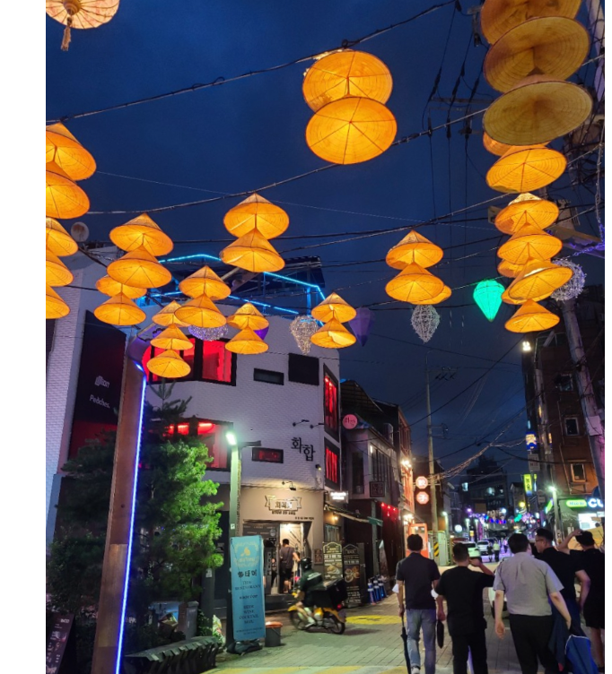

This is Page 1. Click here to go to Page 2.
Itaewon is one of the most lively neighborhoods in Seoul, renowned for its trendy restaurants, cool bars, and lively nightlife scene. Both locals and travelers flock to the area, and for good reason. It's conveniently situated near the subway, making it an easy stop after visiting the nearby War Memorial during the day. Stroll around and check out the quirky shops, cafes, and adorable character shops, ideal for taking photos.
